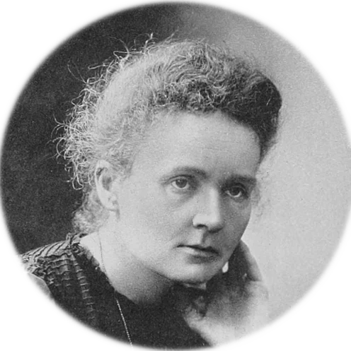

ECOFLOR 2026

About
Welcome to the 23rd Annual Meeting of the Spanish Group for Floral Ecology and Evolution (ECOFLOR)!
We’re pleased to announce the 23rd Annual Meeting of the Floral Ecology and Evolution working group, EcoFlor, which will take place from February 11-14, 2026, in Tortosa.
EcoFlor is a working group of the Spanish Association of Terrestrial Ecology (AEET). It organizes an annual congress to discuss recent scientific findings. The 2026 meeting will be held at the Centre Cívic Ferreries, located in the city center of the medieval city of Tortosa, on the banks of the Ebro River.
The EcoFlor annual meeting brings together scientists interested in floral ecology and evolution. Its goal is to promote discussion, networking, and creativity in science, involving students at all career stages in an open and friendly environment. Participants are invited to present their ongoing projects and engage in critical scientific discussion and networking. In recent years, EcoFlor has expanded its reach, achieving an international dimension and welcoming contributions from researchers worldwide.
Following the traditional format, the meeting will feature two days of presentations (Thursday and Friday), including plenary talks, as well as oral and poster contributions. These will be thematically structured based on the submitted abstracts.
In addition, there will be workshops on Wednesday and a field trip on Saturday to the Ports Natural Parks (a mountain range affected by a recent wildfire) and the Delta (an area of aquatic ecosystems and ecosystem restoration). The congress dinner will be held on Thursday evening.
All contributions should be in English to promote discussion and interaction with our international audience.
Meeting information summary
üìÖ 9-10th February 2026
üìç Tortosa
✉️ Submit your abstract and register until November 30th, 2025
Registration
Registration and abstract submission are now open until November 30h.
Submit your oral or poster contribution in the form.
Registration and Contributions
Attendance at the meeting is free, but registration is mandatory for logistical reasons. Please fill out the form if you plan to attend.
When registering, you can also submit a proposal for an oral or poster presentation. Awards will be given for the best oral and best poster presentations.
Senior researchers are also welcome to propose opening talks. These talks will be slightly longer than oral presentations and will consist of short lectures on research lines, breakthrough ideas, or emerging topics of scientific interest, rather than the results of specific studies.
We also welcome proposals for workshops to be held on Wednesday the 11th (the day of arrival). We especially encourage workshops that help early-career researchers develop skills, such as fieldwork methods, sample processing, laboratory protocols, data analysis, and scientific writing. Discussions on emerging topics of interest and networking opportunities are also welcome!
At the end of the form, there is a questionnaire to find out if you’d be interested in participating in the parallel activities. Once we know the potential attendance, we’ll provide more information to participants.
Important Note
The meeting is limited to 100 participants. Acceptance will be based on a combination of factors: the order of registration, whether you submit a contribution, and the scientific scope of your work. We highly encourage young researchers to submit their contributions, as the scientific commission will give them priority for acceptance.
Preparing Your Abstract
Please submit your abstract in English during the registration process. The abstract should not exceed 200 words. When submitting, please also provide five keywords that will help us organize the conference sessions.
Each main author may submit only one contribution. We kindly request that the main author be the one who submits the abstract.
Oral Presentations
Oral presentations will be 12 minutes long, and all slides must be in English.
If your presentation is accepted, please email your slides to ecoflor2026@gmail.com by February 2nd. The organizing committee will use your file solely for projection during the conference and will delete it immediately afterward.
Poster Presentations
Posters will be displayed in a room next to the main hall throughout the conference.
Poster sessions will take place during the coffee breaks: a 30-minute session in the morning and a one-hour session in the afternoon. The afternoon break, which will include coffee and beer, is specifically designed to encourage discussion and networking with poster presenters.
Program
Keynote speakers

Marie Skłodowska Curie PhD
Some text, some text, some text, some text, some text, some text, some text. This text will be confined to its column and will not wrap underneath the image. It will simply extend downwards as needed, staying to the right.
Marie Skłodowska Curie PhD
Some text, some text, some text, some text, some text, some text, some text. This text will be confined to its column and will not wrap underneath the image. It will simply extend downwards as needed, staying to the right.
Downland the program from here.
Venue
Welcome to TORTOSA!
The 23rd edition of EcoFlor takes place at the Centre Cívic Ferreries. This historical building (ancient market) is located in the city center of Tortosa.
Oral Presentations (including plenary talks) will take place in the Main Hall.
Posters will be in the room next to the Main Hall.
Workshops will be conducted in…
There are up to three spaces (two small meeting rooms, one big hall with panoramic view to the Main Hall) upstairs. Consider this if you need to work some time or to meet with colleagues. You could book the room some period of time by 1) mailing to the organization, or 2) writing it in the room schedule (blank paper in the door).
How to get there
For those coming from abroad and landing at Barcelona airport, it is easy to reach Tortosa, since there is a direct bus (Hife company) connection with departures every hour, taking about 2 hours to reach Tortosa. Remember to buy the ticket with anticipation. Consider that you can also get the bus (Hife) from several bus stops in Barcelona, with direct connections to Tortosa.
If you are already in Barcelona, you may get the train R16 from Sants Train Station operated by the Renfe company. Departures are approximately every 1-2 hours, taking about 2 hours.
For those coming in car (e.g. Spain), just get the exit number 40 in the AP-/ railway.
If you find any problem, contact the ECOFLOR organization committee.
Organisation committee
Marie Skłodowska Curie PhD
Some text, some text, some text, some text, some text, some text, some text. This text will be confined to its column and will not wrap underneath the image. It will simply extend downwards as needed, staying to the right.
Marie Skłodowska Curie PhD
Some text, some text, some text, some text, some text, some text, some text. This text will be confined to its column and will not wrap underneath the image. It will simply extend downwards as needed, staying to the right.
Marie Skłodowska Curie PhD
Some text, some text, some text, some text, some text, some text, some text. This text will be confined to its column and will not wrap underneath the image. It will simply extend downwards as needed, staying to the right.